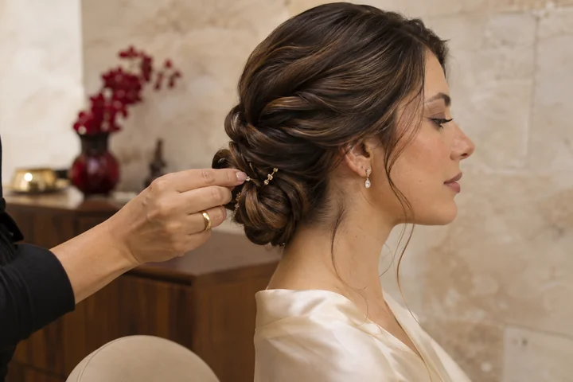

Um corte que funciona na sua rotina.
Conte como você usa o cabelo no dia a dia e o que quer mudar. A conversa ajuda a definir o corte e a finalização.

O que você quer fazer no cabelo?
Escolha um serviço para começar o pedido.
Corte e finalização
Para manter o comprimento, mudar o formato ou encontrar um corte mais fácil de arrumar.
Pedir atendimentoColoração
Para retocar a cor, discutir uma mudança ou entender o que ela pede de manutenção.
Pedir atendimentoPenteado para evento
Conte a ocasião e a data para a equipe conversar sobre o penteado e a disponibilidade.
Pedir atendimento


Antes da tesoura, uma conversa.
Conte quanto tempo você costuma ter para arrumar o cabelo, o que gosta no corte atual e o que prefere evitar. Se trouxer uma foto, mostre o detalhe que chamou sua atenção.
Antes de pedir
um atendimento
Preciso saber qual corte quero?
Você pode pedir corte e indicar que prefere decidir com a equipe. Vale contar o que quer manter e o que pretende mudar.
Posso levar uma referência?
Sim. Se tiver uma foto, diga se o que mais gostou foi o comprimento, o volume ou a finalização.
Quando o horário fica reservado?
Depois de conferir a agenda, o salão combina a data e o horário no retorno.
Conte o que você quer mudar.
Seu pedido ajuda o salão a entender o serviço antes de falar com você.
Pedir atendimento
Pedido simulado
- Protocolo de teste
- Serviço
- Preferência
- Retorno
Em um atendimento real, o salão conferiria a disponibilidade e combinaria o horário com você.